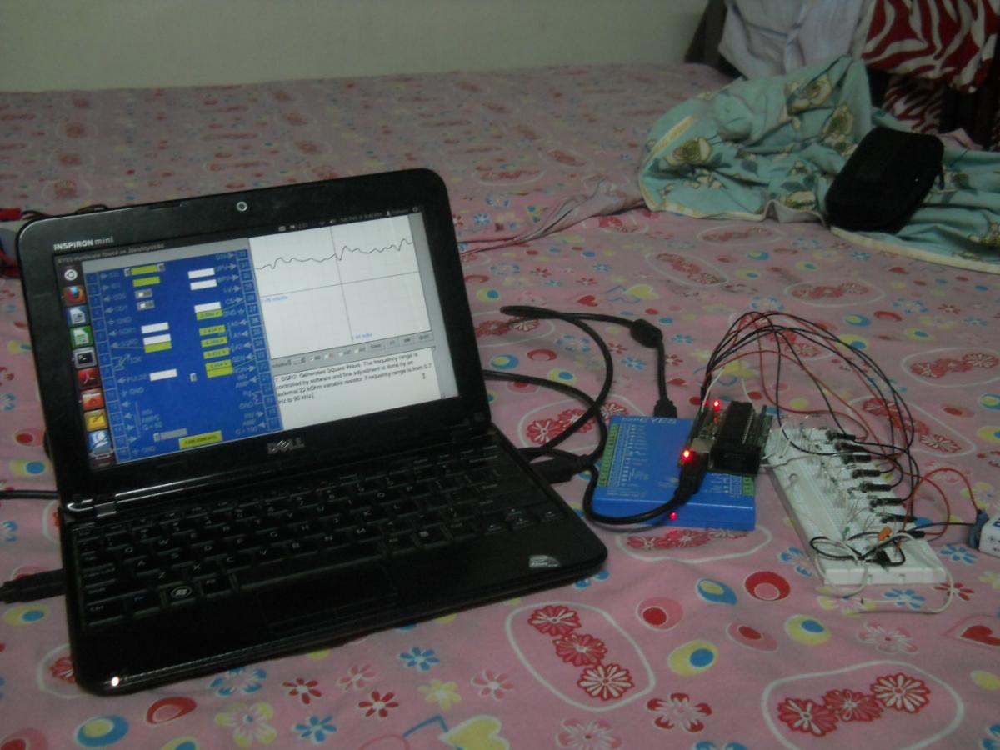

 Microhope can be programmed to act as a USB sound card. The following programs demonstrate how a WAV file can be streamed to microhope and played using the R-2R DAC plugin board (homemade R-2R ladder shown in photo), and also how audio can be sampled by microhope and sent to the PC to be stored as a WAV file. An expEYES is used to see the waveform generated by the R-2R DAC
Audio Playback
C Program - audio_streaming.c
#include <avr/io.h>
#include <avr/interrupt.h>
int main()
{
DDRB = 0xff;
UCSRB = (1<<RXEN) | (1<<TXEN) | (1<<RXCIE);
UBRRH = 0; //set baud rate of 500000
UBRRL = 0;
UCSRC = (1<<URSEL) | (1<<UCSZ1) | (1<<UCSZ0);
sei();
for(;;)
{
}
}
ISR(USART_RXC_vect)
{
PORTB = UDR;
}
Python program at the PC side to read the WAV file (with 8-bit samples and sampling rate of 48000) and send the samples:
audio_streaming.py
import wave,serial
s=serial.Serial('/dev/ttyUSB1',500000)
f=wave.open('out2.wav','r')
x=f.readframes(f.getnframes())
s.write(x)
Audio Recording
The output of a condenser mic, amplified 100 times and level shifted to make the signal unipolar (circuits not shown here), is fed to the analog input pin PA0. The signal is sampled using the Atmega32's on-chip ADC, and streamed to the PC, where a python program stores the samples in the form of a wav file.
record.c
#include <avr/io.h>
#include <avr/interrupt.h>
uint8_t data;
int main()
{
DDRB = 0xff;
//configure ADC
ADCSRA = (1 << ADEN) | (1<<ADSC) | 4; //sampling rate - 38 kSps
ADMUX = (1 << REFS0) | (1 << ADLAR);
while ( !(ADCSRA & (1<<ADIF)) ) ; // wait for ADC conversion
ADCSRA |= ADIF;
//configure UART
UCSRB = (1<<RXEN) | (1<<TXEN);
UCSRC = (1<<URSEL) | (1<<UCSZ1) | (1<<UCSZ0);
UBRRH = 0;
UBRRL = 0;
for(;;)
{
ADCSRA = (1 << ADEN) | (1<<ADSC) | 4 ;
while ( !(ADCSRA & (1<<ADIF)) ) ;
data = ADCH; //read sample of analog input
ADCSRA |= ADIF;
PORTB = data;
while ( !(UCSRA & (1<<UDRE)) );
UDR = data; //send sample to PC via UART
}
}
record.py
import serial, wave
s = serial.Serial('/dev/ttyUSB1',500000)
w = wave.open('record.wav','w')
data = s.read(1000000) #read 1 million samples
w.setnchannels(1) #mono audio
w.setsampwidth(1) #8-bit samples
w.setframerate(33500) #sample rate, found by trial and error
w.writeframesraw(x)
w.close()
contributed by Kishore T